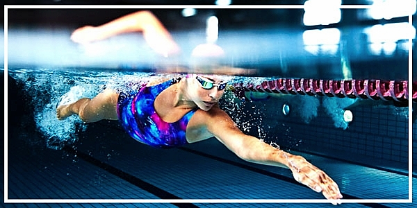
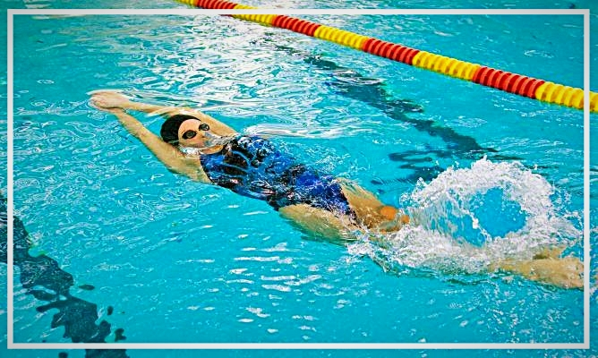
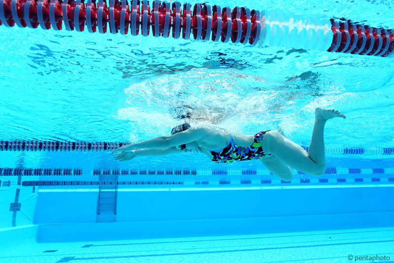
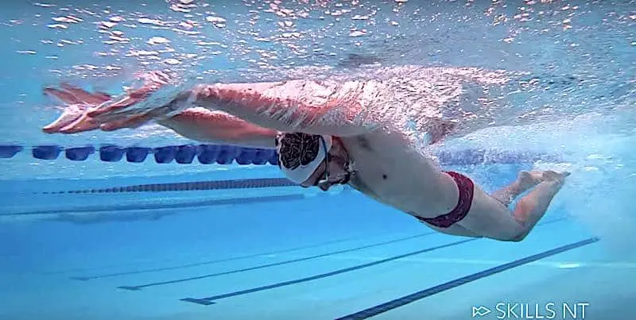

La natación permite que trabajemos todas las partes del cuerpo al mismo tiempo. Además, no puedes dejar de moverte dentro del agua para poder sostenerte. Por esa razón no fallamos si decimos que la natación es uno de los deportes más completos.
En comparación con otros deportes, se trata de un deporte con muy poco impacto. Esto es beneficioso para nuestros tendones, articulaciones, husos y músculos. Pero ten en cuenta que debemos realizar los ejercicios correctamente y dominar la técnica de los estilos de natación. Además, nos ayuda a disminuir tensiones musculares y articulares ya que disminuye el efecto de la gravedad.
Mientras nadamos, tenemos consciencia plena de nuestro cuerpo y de las partes que lo constituyen. Es muy importante la coordinación, así como el control de nuestra respiración. Es por ello que es un deporte fenomenal para aliviar el estrés.
Ahora te explicaremos los 4 estilos de natación, como hemos dicho, es importante realizar los ejercicios correctamente. Es bastante sencillo quedarse con la técnica, pero deberemos practicar para perfeccionarla y conseguir así mejores resultados.
Podemos decir que se trata del estilo más básico y habitual. Este estilo es el primero que se enseña en las clases de natación y es el estilo por excelencia si queremos aprender a nadar. Para dominar el crol, debemos controlar la parte superior de nuestro cuerpo coordinado con la inferior. Debemos colocarnos boca a bajo, flotando. Con la ayuda de ambos brazos, realizaremos brazadas alternando el brazo derecho y el izquierdo. Importante que las palmas queden hacia bajo, como si fueran remos, ya que así avanzaremos más rápido. No solo es importante el movimiento alternado de los brazos, sino que también debemos ayudarnos de las piernas. Debe ser un ejercicio coordinado: debemos mover a la vez brazos y piernas. Estas realizaran una propulsión que nos moverá hacia delante.
//Para a Como su propio nombre indica, este estilo de natación se realiza de espaldas. Es parecido al estilo crol, ya que los movimientos de brazos y piernas son muy similares, aunque al revés. Nos colocaremos boca arriba y realizaremos brazadas hacia atrás de forma alterna. Las palmas de las manos deben estar hacia afuera y por encima de la cabeza para propulsarnos con mayor potencia. Las piernas, igual que en crol, haremos movimientos de patadas.
Este estilo lleva el nombre de braza porque será la parte del cuerpo encargada de aguantar el ejercicio. Se trata del movimiento más antiguo, ya que responde como movimiento natural y respetuoso con las partes de nuestro cuerpo.
Debemos tener las piernas sumergidas y dobladas ligeramente por las rodillas. La espalda la colocaremos ligeramente inclinada hacia dentro y con la ayuda de los brazos, apartaremos el agua hacia los lados. La cabeza está siempre fuera del agua durante el ejercicio, facilitando la respiración.
Se trata de un estilo difícil de aprender, ya que se necesita tener buena fuerza muscular. Nos colocamos de cara al agua con la cara sumergida. El cuerpo debe estar completamente estirado y el movimiento será con los brazos y las piernas. Es parecido al crol, pero los brazos esta vez deben ir al unísono, sin alternarlos.
Volvemos a mencionar la importancia de la coordinación, como en los demás estilos de natación. Es importante que el ejercicio de las piernas sea el correcto, juntas y con movimientos ondulantes de adelante hacia atrás.
Si desea conocer más acerca de este deporte, no dude en leer más en es la siguiente página web: Escuela de rendimiento deportivo y profesional